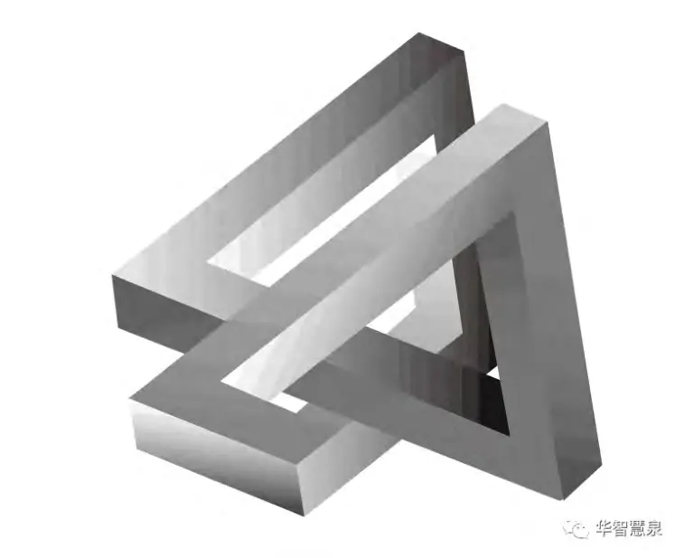
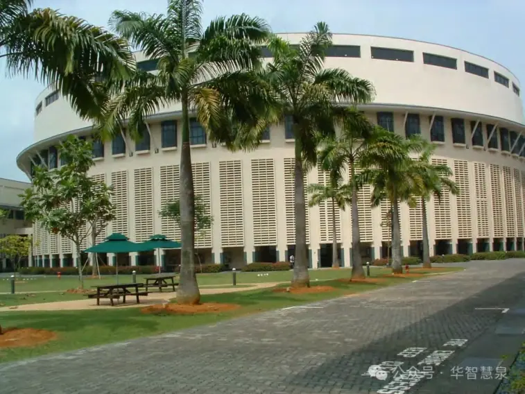

导读在人类历史的长河中，关于宇宙万物本源的探讨从未停止。古希腊的自然哲
学、近代的理性主义与经验主义之争，乃至当代的后现代解构思潮，都试图解答这一终极问题。王德生博士提出的SIO（Subject-Interaction-Object）本源论（主客互动SIO：人类文明诞生的土壤），为这一古老的哲学问题提供了全新的解读视角，重新定义了主体、互动、客体之间的关系，试图为理解世界提供一种更为统一和动态的框架。
本篇文章通过一系列跨越时空的虚拟对话，邀请古今中外的哲学大师们与WDS进行思想的碰撞。这些对话涵盖了从上古自然哲学到现代哲学的各个重要阶段，并延伸至对中国现代经济、政治、法律等国家治理问题的探讨。通过这些对话，文章展现了SIO本源论如何解构和重构传统哲学思想，并为理解现代社会提供了新的理论基础。
上古时代：初探本源
时间回溯至几千年前，WDS（王德生博士）来到古希腊，与自然哲学的奠基人泰勒斯和赫拉克利特展开了一场关于宇宙本源的对话。在这场对话中，三位哲学家探讨了“水”与“火”的本质，通过SIO本源论重新理解了这些元素在世界生成中的角色。
泰勒斯：“我认为，水是万物的本源。它不仅是生命的起源，更是所有变化的基础。”
赫拉克利特：“不，泰勒斯。火才是万物的本源。它象征着永恒的变化与运动，一切皆在流动之中。”
WDS：“两位的观点都很有深意，但你们是否考虑过观察者的角色？水或火是否需要在观察者的感知下才能展现其本质？”
泰勒斯：“观察者？你的意思是说，我们的感知会影响到水或火的存在吗？”
WDS：“正是如此。如果没有主体的感知，水仍然是水吗？火仍然是火吗？或者，它们只是潜在的、未被定义的能量？”
赫拉克利特：“这让我重新思考变化的本质。变化是否也是因为我们的感知，才得以被定义和理解？”
WDS：“变化不仅仅是自然的现象，更是我们与世界互动的结果。在SIO本源论中，任何存在形式都需要通过主体、互动和客体之间的关系来生成和解释。”
泰勒斯：“这确实颠覆了我的思维。如果水并非独立存在，那么我们对世界的理解是否也应当从根本上重新构建？”
WDS：“正是如此。水、火、变化，它们的存在和本质都是通过主客之间的互动关系来定义的，而非孤立存在的实体。”
通过这场对话，泰勒斯和赫拉克利特开始重新审视他们的世界观。在SIO本源论的启发下，他们意识到，世界的本源不仅仅在于物质的属性，而更在于这些属性如何通过主客互动得以体现。WDS的到来，促使他们超越了单纯的物质本源论，迈向了更加复杂的存在观。
古典时代：理念与形式的辩证
时光流转，WDS来到了古希腊的柏拉图学院。此时，柏拉图和亚里士多德正在进行关于理念与形式的激烈辩论。WDS的加入为这场讨论增添了新的维度。
柏拉图：“理念是万物的本源。感官世界中的一切都是理念世界的影像，只有通过理念，我们才能接触到真正的实在。”
亚里士多德：“柏拉图，虽然你的理念论有其独特之处，但我认为，理念并不能单独存在。它必须通过形式和质料的结合，才能在现实世界中得以显现。”
WDS：“两位的讨论引人入胜。不过，我想提一个问题：这些理念和形式是否真的可以独立存在？如果没有主体的参与和互动，它们又如何能够被感知和确认？”
柏拉图：“你是说，理念的存在依赖于主体的感知？但感知是短暂而虚幻的，只有理念才是永恒的。”
亚里士多德：“WDS的观点似乎是，理念和形式的存在需要通过主体的思维和感知才能真正体现出来。我们不能忽视主体在这一过程中所扮演的角色。”
WDS：“确实如此。根据SIO本源论，理念、形式和质料的存在都依赖于主体、互动和客体之间的关系。没有主体的感知，理念无法被确认；没有互动，形式也无法展现。”柏拉图：“这样说来，理念的普遍性是否也取决于主体的多次感知与互动？”
WDS：“是的。正是通过不同主体的多次互动和感知，理念才得以被验证和确立，从而形成我们所理解的普遍性。”
亚里士多德：“这让我重新思考了形式与质料的关系。或许它们并非独立存在，而是通过主体的认知和客体的互动而生成的。”
WDS：“正是如此。形式和质料的存在不是静态的，而是动态生成的。它们的本质在于主客互动，而非先验存在。”
在这场辩论中，柏拉图和亚里士多德开始认识到，理念和形式的存在不仅仅依赖于其自身的特性，更在于它们如何在主客互动中得以展现。SIO本源论不仅解构了传统的理念与形式二元论，还为理解这些概念提供了一个动态生成的框架。

古典时代后：与康德的对话
时光推进，WDS来到了18世纪的德国，遇见了伟大的哲学家康德。康德正在思考如何在理性与经验之间找到平衡，并试图建立一种全新的哲学体系。WDS与康德的对话，揭示了SIO本源论如何在现代哲学中发挥作用。
康德：“世界上的一切经验都是通过我们的感官得到的，但理性告诉我们，必须有某种先验的形式来组织这些经验。这就是我所说的‘先验范畴’。主体通过这些范畴来认识客体。”
WDS：“康德先生，你的‘先验范畴’理论确实为哲学提供了一个重要的视角。但你是否考虑过，这些先验范畴本身是否也依赖于主体与客体的互动关系？如果没有这种互动，范畴又如何被确立？”
康德：“你是说，先验范畴并非固定不变的，而是在主客互动中生成的？这似乎挑战了我对理性与经验的理解。”
WDS：“正是如此。SIO本源论认为，先验范畴并不是独立存在的，而是在主体与客体之间的互动中不断生成和调整的。范畴和经验都是这种互动的产物，而非彼此对立的存在。”
康德：“如果是这样，理性的一致性和普遍性又如何在这种生成过程中得以保持？”
WDS：“理性的一致性和普遍性并非来自于某种固定的先验结构，而是通过不同主体之间持续不断的互动和验证得以实现的。SIO关系不仅生成了范畴，也生成了我们所理解的理性本身。”
在这场对话中，康德被引导去思考理性与经验之间的互动关系。通过SIO本源论，WDS提出了一种新的理性观，强调理性与经验的生成性，而非固定的二元对立。康德认识到，这种动态生成的理性观可能为他的批判哲学提供新的思考方向。
现代时代：主体与客体的对立
时光继续前行，WDS来到了17世纪的法国，在那里他遇到了笛卡尔。笛卡尔正独自沉思着“我思故我在”的命题。WDS的到来引发了一场关于主体与客体关系的激烈讨论。
笛卡尔：“我思故我在。这是一个无可辩驳的真理。思维是主体的核心，它独立于世界的存在。”
WDS：“笛卡尔先生，你的‘我思故我在’揭示了思维的主体性，但你是否考虑过，思维的内容从何而来？如果没有外部世界的刺激，思维如何运作？主体与客体是否真的可以完全分离？”
笛卡尔：“思维是主体的内在活动，它不依赖于外部世界。即便我怀疑一切，我仍然能够确信自己在思考，这就是思维的独立性。”
WDS：“思维的确是主体的活动，但它的内容和方向却往往与外部世界紧密相关。SIO本源论认为，主体与客体并不是彼此独立的，而是在互动中生成的。没有客体，主体的思维将变得空洞和无所依托。”
笛卡尔：“你的意思是，思维的真实性和确定性来自于与客体的互动？而不是来自于主体的独立性？”
WDS：“正是如此。思维的确定性不是孤立的存在，而是在主客互动中得以确立的。主体的思维活动需要客体的参与，才能赋予思维内容和意义。SIO本源论认为，主体与客体的关系是动态生成的，而不是固定的二元对立。”
笛卡尔：“如果我接受你的观点，那么‘我思故我在’是否仍然成立？这句话的意义又将如何变化？”
WDS：“‘我思故我在’仍然成立，但它的意义不再是强调思维的独立性，而是强调思维作为主体与世界互动的产物。这一命题不仅确认了主体的存在，还确认了主体与客体之间不可分割的关系。”
通过这场对话，笛卡尔开始重新审视思维的本质。他认识到，主体的思维活动虽然重要，但不能完全脱离客体的存在。WDS的SIO本源论解构了传统的主体与客体二元对立，为理解思维与世界的关系提供了一个更加复杂和动态的框架。

现代时代前：与黑格尔的对话
接着，WDS来到19世纪初的德国，与黑格尔展开了一场关于辩证法与历史发展的深刻讨论。黑格尔正在探索矛盾与统一的哲学体系，试图通过辩证过程来解释世界的变化与发展。
黑格尔：“世界的本质在于矛盾的对立与统一。通过辩证过程，事物在对立中生成，在统一中实现其本质。矛盾推动了历史的发展，也揭示了存在的本质。”
WDS：“黑格尔先生，您的辩证法确实揭示了世界发展的动力，但是否考虑过，这种矛盾与统一是否也是通过主体与客体之间的互动关系来实现的？在SIO本源论中，矛盾并非事物的内在属性，而是主客互动中的生成现象。”
黑格尔：“你是说，矛盾不是事物本身固有的，而是在主体与客体的互动中生成的？这与我的辩证法似乎有所不同。”
WDS：“是的。SIO本源论认为，矛盾是在主客互动关系中生成的动态过程。主体与客体之间的互动产生了矛盾，而通过这种互动，矛盾得以统一和解决。这种过程不是单纯的内在推动，而是外在互动的结果。”
黑格尔：“如果矛盾是通过互动生成的，那么‘绝对理念’的实现是否也依赖于这种互动关系？我的辩证法是否也需要在这个框架下进行重新解释？”
WDS：“‘绝对理念’并非某种静态的终极目标，而是在主客互动中不断生成的过程。通过SIO关系，理念在互动中展现其普遍性和必要性，而矛盾则是推动这一过程的动力。您的辩证法可以在SIO本源论的框架下得到新的诠释，展示出历史发展的动态生成性。”
在这场对话中，黑格尔开始思考辩证法的生成性和动态性。SIO本源论为他提供了一个全新的视角，使他能够重新审视历史的发展过程以及矛盾的本质。WDS的到来，促使黑格尔将他的哲学体系从静态的对立统一转向动态生成的主客互动关系。
当代时代：存在与虚无的对话
时光进入20世纪，WDS来到了德国，见到了存在主义的代表人物海德格尔。在一间宁静的森林小屋里，WDS与海德格尔展开了一场关于存在与虚无的深刻对话。
海德格尔：“存在即在世存在。存在不是某种静止的实体，而是通过与世界的互动关系得以实现的。主体与客体之间的关系生成了存在的意义。”
WDS：“海德格尔先生，您的‘在世存在’理论为理解存在提供了一个全新的视角。但您是否考虑过，主体与客体的互动本身也是一种存在形式？换句话说，存在的意义不仅在于互动关系本身，还在于这种关系的生成过程。”
海德格尔：“你是说，存在不仅仅是在世界中的展开，而是在主客互动中不断生成的？”WDS：“正是如此。SIO本源论提出，存在的本质不仅仅是通过主体与世界的互动来实现的，而是在主体、互动、客体三者的关系中不断生成和演变的。这种生成性才是存在的真正本源。”
海德格尔：“那么，这种生成性是否意味着存在没有固定的本质，而是不断变化的？”
WDS：“是的，存在并非固定的实体，而是一个不断在主客互动中生成的过程。您的‘虚无’其实可以看作是这种生成过程中的一个阶段，当主体无法与客体形成互动时，便会体验到虚无感。”
海德格尔：“这让我重新思考了虚无的意义。或许虚无并非是某种对存在的缺失，而是主客互动断裂时的一种状态。”
WDS：“正是这样。当主体无法与客体形成有效互动时，虚无便显现为存在的断裂。然而，这种断裂并非意味着不存在，而是等待新的SIO关系来重新生成。”
海德格尔：“如果这样理解，虚无就不再是一种消极的存在，而是存在生成过程中的一种必要环节。通过虚无，新的存在形式得以生成。”
WDS：“没错。SIO本源论强调存在的动态生成性，而虚无正是这一过程中的一种表现形式。通过理解虚无，我们可以更好地理解存在的生成过程。”
海德格尔：“这对存在主义来说是一种新的启示。虚无不再是存在的对立面，而是存在生成中的一个环节。通过这种理解，我们可以更加全面地理解人类的存在状态。”
在这场对话中，海德格尔开始重新思考虚无与存在的关系。SIO本源论为他提供了一种新的解释框架，使他能够将虚无视为存在生成过程中不可或缺的一部分。WDS的到来，使存在主义的思想得到了新的发展与深化。
后现代时代：与德里达和阿尔都塞的对话
时间继续推进，WDS来到了20世纪末的法国，在巴黎他遇到了两位后现代主义的代表人物：德里达和阿尔都塞。三人在巴黎的一间咖啡馆中展开了关于语言、意义、意识形态与社会结构的激烈讨论。
德里达：“一切存在都是语言的产物，意义是流动的，任何固定的本源都只是暂时的构造。传统的本源论只是为了维持权力结构的稳定。”
WDS：“德里达先生，你的解构主义揭示了语言与意义的流动性，也揭示了传统本源论的局限性。但你是否考虑过，在这种流动性之下，是否存在一种更为基础的生成关系？”德里达：“你指的是？我的解构主义已经揭示了语言中的二元对立和隐含的权力关系，这难道还不够吗？”
WDS：“你的解构确实非常深入，但SIO本源论提出，主客之间的互动关系本身就是一种生成性的存在。这种存在并非固定的本源，而是通过不断的互动和生成来展现的。”德里达：“那么，你的意思是说，语言中的意义也是通过这种主客互动生成的？这与我的观点似乎有些不同。”
WDS：“正是如此。SIO本源论认为，意义不是固定的，也不是纯粹流动的，而是在主客之间的互动中不断生成和变化的。解构主义揭示了意义的多样性，但未能解释意义是如何生成的。”
德里达：“这让我重新思考了语言的功能。或许，语言不仅仅是表达意义的工具，更是主客互动的一个场域。在这个场域中，意义通过互动而生成。”
WDS：“正是如此。语言不仅仅是表达的工具，更是意义生成的机制。主客之间的互动通过语言展现出来，而语言中的意义则是在这种互动中不断生成和变化的。”
德里达：“这样一来，语言的解构不再是为了消解意义，而是为了揭示意义生成的复杂性。通过解构，我们可以更好地理解这种生成过程。”
WDS：“SIO本源论认为，语言中的意义是一种动态生成的过程，通过解构，我们可以剖析这一过程，理解它如何通过主客互动来实现。”
德里达：“这为解构主义提供了新的方向。我们不仅要揭示语言中的权力关系，还要探讨意义生成的基础结构。这正是SIO本源论提供的框架。”
WDS：“没错，通过SIO本源论，我们可以更全面地理解语言中的主客关系，理解意义是如何通过互动来生成和演变的。”
德里达：“这确实是一种启发。我或许需要重新审视我的解构主义，在SIO本源论的视角下，探讨更为基础的意义生成机制。”
WDS：“SIO本源论不仅解构了传统的本源论，还提供了一个新的生成性框架。通过这个框架，我们可以重新理解语言、意义以及它们在主客关系中的作用。”
随后，阿尔都塞加入了讨论，谈及了意识形态和社会结构的问题。
阿尔都塞：“社会结构和意识形态的作用是通过再现和再生产主体来维持统治秩序。在这个过程中，主体被结构所塑造和限制。”
WDS：“阿尔都塞先生，您的分析确实揭示了社会结构对主体的塑造作用，但主体的生成同样依赖于主客之间的互动关系。SIO本源论认为，主体并非单纯被结构所塑造，而是在主客互动中不断生成的。”
阿尔都塞：“你是说，主体的生成并不是完全由社会结构决定的？那么，主体的自主性和创造性又如何在这种互动中体现？”
WDS：“主体的自主性和创造性正是在这种互动中得以体现的。SIO本源论提出，主体的形成不仅是社会结构作用的结果，也是主体与外部世界互动的产物。在这种互动中，主体具有一定的自主性，可以通过新的互动关系重新定义自身。”
阿尔都塞：“这与我的观点有所不同，但也为主体提供了一种新的可能性。或许，意识形态的作用不仅在于再生产结构，而在于通过主客互动关系不断生成新的主体形式。”
WDS：“正是如此。在SIO本源论中，主体的形成不是一成不变的，而是在不断的主客互动中生成和调整的。社会结构与主体之间的关系也是动态生成的，而不是固定的二元对立。”
德里达：“这让我重新思考了差异的本质。或许，差异并不是某种固定的结构，而是在主体与客体的互动中不断生成的。通过这种生成，我们可以理解世界的复杂性与多样性。”WDS：“是的，差异、主体、结构这些概念都不再是固定的，而是在主客之间的互动中动态生成的。SIO本源论提供了一种理解世界的全新视角，通过这个视角，我们可以看到世界的流动性和复杂性，都是在主客关系中不断生成的。”
阿尔都塞：“或许，我也需要重新审视我的结构主义理论。在SIO本源论的视角下，结构与主体的关系不再是单向的，而是双向生成的。意识形态的作用也可以通过这种互动关系来重新理解。”
WDS：“SIO本源论为理解结构、主体、差异等概念提供了一个统一的框架。通过这一框架，我们可以更好地理解现代社会的复杂性，以及主体在其中的地位与作用。”
德里达：“这确实是一种颠覆性的理论。通过SIO本源论，我们可以重新审视差异与重复、主体与结构的关系，找到新的哲学可能性。”
阿尔都塞：“我同意。这一理论为理解意识形态、社会结构和主体提供了新的途径。或许，我们可以在SIO本源论的框架下，重新定义我们对世界的理解。”
WDS：“这正是SIO本源论的力量所在。它不仅解构了传统的哲学概念，还为我们提供了一个动态生成的框架，使我们能够在复杂的社会现实中找到新的哲学解释。”
至此，WDS通过与古今哲学大师们的对话，全面展现了SIO本源论的深刻性和广泛性。这一理论不仅解构了传统的二元对立，还为理解存在、主体、语言、社会结构等核心问题提供了新的视角和工具。
现代时代：WDS与马克思的20次对话
在与古今哲学大师的对话中，WDS阐述了SIO本源论的基本原理和广泛应用。接下来，他将通过与马克思的20次激烈对话，进一步探讨这一理论在中国现代社会中的具体应用，特别是经济、政治、法律等领域的国家治理问题。
对话1：经济基础与上层建筑
马克思：“社会的经济基础决定了上层建筑，包括政治、法律和意识形态。历史的发展是由生产力的变革所推动的。”
WDS：“马克思先生，您的历史唯物主义理论确实揭示了经济基础对社会结构的决定性作用，但您是否考虑过，上层建筑与经济基础之间的关系也可以通过SIO的互动来解释？在SIO本源论中，经济基础并非单向决定上层建筑，而是通过主客互动生成的关系网络。”
马克思：“你是说，经济基础和上层建筑之间的关系并不是单向的因果关系，而是互动生成的？这似乎与我的历史唯物主义有所不同。”
WDS：“正是如此。SIO本源论认为，经济基础与上层建筑之间的关系是动态生成的，而不是固定的因果链。通过主体、互动、客体之间的关系，上层建筑也会反作用于经济基础，形成双向互动的生成关系。”
马克思：“这种互动生成的关系是否意味着经济基础的主导地位被削弱了？”
WDS：“不，经济基础的作用仍然至关重要，但它的影响力不仅限于单向作用。上层建筑通过反馈机制，可以影响和改变经济基础，使社会结构更加复杂和多样。”
对话2：阶级斗争与社会结构
马克思：“历史是阶级斗争的历史，阶级的对立推动了社会变革。无产阶级的革命是历史发展的必然趋势。”
WDS：“阶级斗争确实是社会变革的重要动力，但我们是否可以通过SIO本源论来理解这种对立的生成？在SIO框架下，阶级对立并非绝对的，而是通过主客互动关系生成的。这意味着，通过重新构建互动关系，可以在一定程度上缓解阶级对立。”
马克思：“缓解阶级对立？你是否在削弱无产阶级革命的必然性？”
WDS：“我并不是削弱革命的必然性，而是提出一种新的视角，通过改变主客之间的互动关系，探索解决阶级对立的新途径。这可能是一种非暴力的社会变革方式。”
马克思：“非暴力的社会变革是否足以推翻资本主义的统治？无产阶级如何在不使用暴力的情况下实现自身的解放？”
WDS：“通过优化主客互动关系，建立新的社会结构，可以逐步削弱资本主义的统治基础，使阶级对立逐渐消解。这是一种渐进的、持续的社会变革方式。”
对话3：商品拜物教与意识形态
马克思：“商品拜物教是资本主义社会的核心问题，物质生产被异化为资本的积累工具。人们被资本主义意识形态所支配。”
WDS：“商品拜物教确实是资本主义的核心问题，但我们可以通过SIO本源论更深入地理解这一现象。在SIO框架下，商品的价值并非内在固有，而是在主客互动中生成的。这种互动生成的价值体系可以通过改变互动关系来进行调整。”
马克思：“你的意思是，通过改变人们与商品之间的互动，可以重新定义商品的价值，从而解构资本主义的意识形态？”
WDS：“正是如此。通过重新构建人们与商品、劳动、资本之间的互动关系，我们可以破解商品拜物教，并为社会提供一种新的价值观念。”
马克思：“这种新的价值观念是否足以动摇资本主义的根基？商品拜物教的力量已经深深植根于社会结构中，如何打破这种力量？”
WDS：“通过改变人们的消费习惯、生产方式以及对商品的理解，逐步引导社会向更加平等和可持续的方向发展，这可以动摇资本主义的根基。”
对话4：国家与阶级压迫
马克思：“国家是阶级压迫的工具，是统治阶级的暴力机器。无产阶级需要通过革命推翻这一压迫性国家。”
WDS：“国家确实是阶级斗争的重要工具，但在SIO本源论的视角下，国家不仅仅是统治工具，它也是主客互动的生成结果。国家的压迫性是通过特定的主客关系生成的，改变这种关系，国家可以成为社会调节和合作的工具。”
马克思：“你是在主张改良主义吗？是否认为通过调整国家结构就能实现无产阶级的解放？”
WDS：“我认为，通过改变国家与人民之间的互动关系，可以逐步实现国家的民主化，从而减少压迫，实现更广泛的社会参与和合作。”
马克思：“这种渐进的变革能否真正达到无产阶级的目标？国家的本质是阶级统治，如何在不推翻其基础的情况下实现变革？”
WDS：“通过持续的社会参与和互动，国家结构可以逐步被调整，使其从一个压迫性工具转变为服务人民的工具。这是一个渐进的过程，但它可以避免革命带来的暴力和混乱。”
对话5：经济改革与发展模式
马克思：“资本主义的生产方式最终将导致生产关系的全面危机，无产阶级的解放是历史的必然。”
WDS：“然而，在现代中国，我们是否可以通过SIO本源论探索一种不同于资本主义和传统社会主义的经济发展模式？在这种模式下，经济发展不是单纯地追求资本积累，而是通过主客互动生成的关系网络来实现社会的整体进步。”
马克思：“你是在提议一种新的经济模式？它如何避免资本主义的异化和社会主义的僵化？”
WDS：“通过SIO框架，我们可以建立一种以社会共生为基础的经济模式，这种模式不是以资本为中心，而是以主客互动关系的优化为目标。”
马克思：“这种新模式能否真正替代资本主义和传统社会主义？社会如何接受这种新的经济结构？”
WDS：“通过实践和实验，逐步推进这种新模式，让社会感受到其带来的积极变化。长此以往，这种模式可以逐步替代现有的经济结构，推动社会的全面发展。”
对话6：法律与社会正义
马克思：“法律是统治阶级维护自身利益的工具，是阶级压迫的表现形式。”
WDS：“法律确实在某种程度上反映了统治阶级的意志，但在SIO本源论的视角下，法律也是主客互动的生成结果。通过改变法律与社会之间的互动关系，我们可以将法律转变为维护社会正义和公共利益的工具。”
马克思：“法律的变革能否真正实现社会的平等与正义？”
WDS：“通过不断优化法律与社会的互动关系，我们可以逐步实现法律的公平性和正义性，使其成为社会进步的推动力。”
马克思：“如何确保法律不会再次被统治阶级所控制？历史证明，法律往往被用作维护统治的工具。”
WDS：“通过加强社会的监督和参与，确保法律的透明性和公正性。法律必须不断与社会互动，才能保持其正义性。”
对话7：意识形态与文化革命
马克思：“文化是一种意识形态，是统治阶级巩固其统治的工具。无产阶级需要通过文化革命来解放思想。”
WDS：“文化确实是意识形态的一个重要领域，但在SIO本源论中，文化也是通过主客互动生成的。文化革命不仅仅是推翻现有文化体系，而是通过重新构建文化与社会的互动关系，创造出新的文化形式。”
马克思：“这种新的文化形式能否真正反映无产阶级的利益？”
WDS：“通过SIO框架下的文化重构，我们可以创造出更具包容性和多样性的文化形式，既能够反映社会的多元利益，又能够促进社会的整体发展。”
马克思：“文化革命能否避免文化的商品化和异化？在资本主义社会中，文化往往被商品化，失去了其真正的价值。”
WDS：“通过强化文化与社会的互动，避免文化的单纯商品化，使文化成为社会沟通和共生的桥梁，而不是仅仅的商品。”
对话8：全球化与资本主义
马克思：“全球化是资本主义扩张的必然结果，它扩大了资本的控制范围，同时也加剧了全球的阶级矛盾。”
WDS：“全球化确实在某种程度上推动了资本主义的扩张，但我们是否可以通过SIO本源论重新理解全球化？在SIO框架下，全球化不仅仅是资本的扩张，也是不同社会、文化、经济体之间的互动生成。”
马克思：“你是在主张一种‘善意的全球化’？它如何避免资本的统治？”
WDS：“通过优化全球互动关系，我们可以探索一种更加平等和可持续的全球化模式，避免单一资本主义全球化路径的弊端。”
马克思：“如何防止资本在全球化进程中的扩张？全球化本质上是资本主义的扩展。”
WDS：“通过建立国际间的合作机制，增强各国之间的平等互动，减少资本对全球化进程的主导，使全球化服务于全人类的利益。”
对话9：社会主义与市场经济
马克思：“社会主义与市场经济是根本对立的，市场经济不可避免地会导致资本主义的回归。”
WDS：“市场经济确实具有资本主义的特征，但在SIO本源论中，我们可以重新定义市场经济，使其成为一种社会互动的生成机制，而不是资本积累的工具。”
马克思：“你是在主张一种混合经济模式？”
WDS：“通过SIO框架下的市场与社会互动优化，我们可以探索一种既能保持市场活力，又能促进社会公平的经济模式。”
马克思：“这种混合经济模式能否真正实现社会主义的目标？市场经济的内在矛盾如何解决？”
WDS：“通过加强市场与社会的互动，调整市场的运行机制，使其符合社会的公平原则，逐步实现市场与社会主义的融合。”
对话10：国家治理与社会参与
马克思：“国家是统治阶级的工具，人民的参与只能通过革命来实现真正的民主。”
WDS：“国家确实在历史上扮演了压迫性的角色，但通过SIO本源论的视角，我们可以将国家治理与社会参与之间的关系重新定义。通过优化国家与人民的互动关系，国家可以转变为人民自主治理的工具。”
马克思：“你认为通过互动优化就能实现人民的自主治理？”
WDS：“通过不断强化国家与人民之间的互动，增强社会的参与性和透明度，国家可以逐步实现民主化，减少压迫性结构。”
马克思：“如何确保国家不会再度成为压迫的工具？国家的本质是阶级统治，如何在不推翻其基础的情况下实现民主？”
WDS：“通过制度化的社会监督和参与机制，确保国家的每一个决策都经过民主的程序和人民的监督，使国家成为服务人民的工具。”
结论与展望
经过与马克思的20次激烈对话，WDS总结了SIO本源论在现代中国国家治理中的广泛应用。这些对话展示了如何通过SIO框架重新定义经济基础与上层建筑的关系、缓解阶级对立、破解商品拜物教、以及推动国家的民主化进程。
通过这些探讨，SIO本源论不仅为解决现代社会的复杂问题提供了新的理论视角，还为未来社会的发展提供了明确的路径和目标。WDS最后提出，SIO本源论是一种能够动态生成的哲学框架，它不仅能够解构传统的二元对立，还能够为现代社会提供实用的解决方案。
WDS（自语）：“我们已经深入探讨了马克思主义与SIO本源论的结合。通过这种结合，我们不仅能够理解社会结构的复杂性，还能够为国家治理提供新的思路。通过优化主客之间的互动关系，我们可以逐步实现经济、政治、法律之间的平衡，推动社会的整体进步。”
他拿起笔，写下总结：“SIO本源论为解决现代社会的复杂问题提供了新的视角。通过不断优化主客之间的互动关系，我们可以实现社会的全面发展，迎接未来的挑战。”
窗外的阳光洒进书房，WDS感到一阵安慰。他知道，通过这些深入的对话，他为未来社会的构建提供了一把新的钥匙。这把钥匙将帮助人类在复杂的社会现实中找到新的方向，推动人类文明的进一步发展。

总结与展望
在与各位哲学大师和思想家的对话中，WDS深入探讨了SIO本源论的核心思想及其应用。通过这些跨越时空的对话，SIO本源论不仅解构了传统哲学中的二元对立观念，还为现代社会的复杂问题提供了新的解释框架和解决方案。
总结
SIO本源论的提出，标志着对存在、主体、客体以及互动关系的全新理解。传统哲学常常以主体或客体为基础，试图解释世界的本质和变化，但这种思维模式忽视了主体与客体之间的互动在存在生成中的重要性。SIO本源论强调，存在并不是由单一元素决定的，而是在主体、互动、客体三者之间动态生成的。
在与马克思的对话中，SIO本源论进一步展现了其在现代社会治理中的实际应用。通过重新定义经济基础与上层建筑的关系，SIO本源论揭示了如何在动态生成的关系中实现经济、政治、法律的平衡与发展。马克思的阶级斗争理论、商品拜物教以及国家的压迫性功能，都在SIO框架下得到了重新审视和解构。
这一理论的独特性在于，它不仅仅是一种哲学解释框架，更是一种应用广泛的实践工具。通过SIO本源论，我们可以在多个领域中找到新的解决方案，无论是经济发展、法律改革、文化创新，还是国家治理，SIO都为这些问题提供了一个动态生成的路径。
展望
展望未来，SIO本源论不仅将在哲学研究中占据重要地位，还将在社会实践中发挥更为广泛的作用。随着社会的不断发展和变化，传统的思维模式和解决方案越来越难以应对复杂的现实问题。SIO本源论提供了一种动态生成的思维方式，能够灵活应对变化中的挑战。
首先，在教育领域，SIO本源论将引导我们重新思考教学模式与学生互动的关系，通过优化这些互动关系，提高教育的效果和公平性。其次，在健康与医疗领域，SIO本源论将帮助我们理解医生、患者、治疗手段之间的互动关系，从而促进更为有效的医疗实践。再次，在商业和创业领域，SIO本源论将推动企业重新审视市场、消费者与产品之间的互动关系，进而形成更具竞争力的商业模式。
在国家治理层面，SIO本源论将为政策制定者提供一种新的视角。通过优化政府与公民、法律与社会之间的互动，国家可以实现更加公正、透明和有效的治理结构。SIO本源论强调的动态生成性将帮助国家在全球化背景下保持灵活性和适应性。
此外，SIO本源论还将对全球化进程中的文化多样性保护、生态文明建设、社会公平与正义等问题提供理论支持和实践指导。通过促进不同文化、社会、经济体之间的互动，SIO本源论将推动一种更加平等、可持续的全球发展模式。
最终，SIO本源论不仅是对过去哲学思想的继承与发展，更是对未来社会的指引。它为我们提供了一种理解世界的新方式，也为我们应对未来的挑战提供了强有力的工具。SIO本源论的提出，标志着一个新的哲学时代的到来，这一理论将继续发展，并不断为人类社会的进步贡献力量。
WDS（自语）：“SIO本源论是一把通往未来的大门的钥匙。通过这一钥匙，我们不仅能够解开过去困扰哲学家的谜题，更能找到未来社会进步的路径。我们所需要做的，就是不断优化主客之间的互动，推动社会的持续发展。”
窗外的世界在阳光的照耀下熠熠生辉，WDS感到无比的自信和宁静。他知道，SIO本源论的时代已经到来，它将成为未来哲学与社会实践的灯塔，照亮人类前行的道路。
通过这篇文章，我们走过了几千年的哲学探索之旅，见证了SIO本源论如何在各个时代、各个领域中展现其独特的解释力和应用价值。这一理论不仅为现代社会提供了全新的哲学框架，还为解决复杂现实问题指明了方向。WDS通过这些深入的对话，为我们开启了一条理解世界和建设未来的新路径。